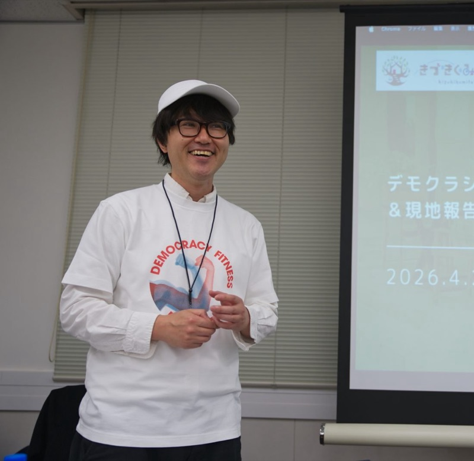

知識として「知っている」だけでは、何も変わらない。
デモクラシーフィットネスは、対話・合意形成・傾聴という
日常のスキルを、スポーツのように身体で習得するメソッドです。
「デモクラシーフィットネス」は、デンマーク発の革新的なコンセプトです。民主主義を「制度」として学ぶのではなく、スポーツのように日常の中で鍛えていく考え方です。
単なる政治の議論ではありません。組織・チーム・コミュニティにおける「対話の基礎体力」をつくるトレーニングです。
民主主義は、使わなければ衰え、放置すれば硬直してしまう"心の筋肉"です。だからこそ、意識的に鍛え続けることが必要なのです。
SNSによるエコーチェンバー、職場の多様化（DE&I）が進む今、「違う意見を持つ人と、どうやって同じテーブルに座り続けるか」というスキルが、公私ともに欠かせないものになっています。
現状を「制度」として嘆くのではなく、日常のコミュニケーションから変えていきたいと感じている方に。
心理的安全性、対話型授業、リーダーシップ育成に取り組む教育者・人事担当・ファシリテーターに。
利害の違う相手と建設的に話し合い、共に動くための実践的スキルを探している方に。
反対意見を「攻撃」ではなく「検討すべき材料」として扱う筋力を養うことで、組織内の隠れたリスクや新しいアイデアが表に出やすくなります。
単なる多数決ではなく、異なる主張の背景にある「大切にしたい価値観」をすくい上げ、全員が当事者意識を持てる合意形成のコツを学べます。
リーダー自らが「問いを立てる力」や「共感力」を実践して見せることで、メンバー間のコミュニケーションの質が連鎖的に向上します。
← スクロールして全て見る →

「時代が必要とする学びの機会を作り、届ける」をテーマに、日本を中心に人材開発・組織開発に従事。
9年ほど東京都で小学校教員として勤めた後、単身セブ島に移住し、複数の教育事業の立ち上げに従事。2015年に帰国後、日本の教育系企業にて多くの企業に研修やワークショップを提供。以降、合計数百にわたる企業の人事戦略・組織戦略の立案や教育施策の実施を支援。
2022年末に独立後、国内外の先進的な教育実践や働き方のリサーチをしながら、日本の伝統的な組織の働き方・学び方のアップデートに挑戦中。
2013年にシンガポールにてLSP（レゴシリアスプレイ）のトレーニングを受講。以降、企業を中心に500以上の現場にLSPを提供するなど、日本でも有数の実践を重ねている。
2022年末に軽井沢に移住。森の中で人間社会と自然との共存の仕方について考え中。
2026年1月 軽井沢合宿（2日間・10の筋肉一挙体験）参加者アンケートより
知の筋トレ。フィットネスというネーミングも納得でした。真の民主主義とは何なのか——多数決ではない民主主義を、身体を伴う形で理解することができました。
良質なコミュニケーションをするためのトレーニングジム。その構成要素が、10個の筋肉でした。
意見をぶつけ合うのは、怒っていることとは違う。違う意見がある場面では「面白い」とニヤッとする感覚がある。ここからが筋肉の使いどころ。
今回のプログラムを通じて、自分の振る舞いによって民主主義が身近になるのだと思いました。会社や家族との対話しながら、各筋肉を意識するようになりました。
ライトに参加できてたくさんの学びがあり、価値観の根底をくすぐられる。ただの直観でしたが、ほんとにいってよかった！
いいえ。「デモクラシーフィットネス」は政党や政策の議論をするものではありません。チームや組織、日常の対話に活かせる「対話スキル」のワークショップです。デンマーク発のコンセプトで、誰もが使える実践的なコミュニケーションのトレーニングです。
もちろんです。参加者の多くが一人での申し込みです。グループワーク形式なので、当日自然と交流が生まれます。初対面の方とも安心して取り組めるよう、ファシリテーターがサポートします。
一切不要です。政治や民主主義についての専門知識も、コミュニケーションの資格も必要ありません。「もっとうまく対話できるようになりたい」という気持ちだけで十分です。
会社員・管理職・教育関係者・フリーランスなど、職種・年齢ともに多様な方が参加されています。「チームの対話を変えたい」「自分の意見を伝えられるようになりたい」「組織開発に関心がある」という方が多くご参加いただいています。
動きやすい服装でお越しください（ワークによっては立って動く場面があります）。筆記用具があると便利ですが、なくても問題ありません。その他の特別な準備は不要です。
事前に y.morimoto@kizukikumitate.com までご連絡ください。可能な限り途中からでも参加いただけるよう対応します。ただし、開始時のオリエンテーションを聞き逃すと内容が分かりにくくなる場合がありますので、できる限り時間通りのご参加をお願いします。
当日受付にて、現金またはPayPayでお支払いいただきます。参加費は ¥1,100（税込）です。事前のお振り込み等は不要です。
前日までに y.morimoto@kizukikumitate.com までご連絡ください。キャンセル料は発生しません。当日の急な体調不良等はご連絡のみで問題ありません。
申し込みフォームからご登録いただいた方には、メールで優先的にお知らせします。また、公式ウェブサイトの「今後のイベント予定」にも随時更新していきます。
デモクラシーフィットネスのトレーナー養成講座を今後開催予定です。ご興味のある方は、申し込みフォームからメール登録をしていただくか、 y.morimoto@kizukikumitate.com まで直接ご連絡ください。
定員に達し次第、受付を締め切ります。お早めにどうぞ。
終了後、外部会場にて懇親会を予定しています。
| 販売事業者 | きづきくみたて工房 |
|---|---|
| 代表者 | 森本 康仁 |
| 所在地 | 〒389-0102 長野県北佐久郡軽井沢町大字軽井沢1012-35 |
| 電話番号 | 070-2810-2677 |
| メールアドレス | y.morimoto@kizukikumitate.com |
| サービス内容 | デモクラシーフィットネス体験会（対話・合意形成トレーニング） |
| 参加費 | ¥1,100（税込） |
| 支払方法 | 当日受付にて現金またはPayPayにてお支払い |
| 支払時期 | 当日受付時 |
| サービス提供時期 | 2025年4月27日（月）18:00〜20:00 |
| キャンセルポリシー | 参加できなくなった場合は、開催前日までに y.morimoto@kizukikumitate.com へご連絡ください。当日払いのため、キャンセル料は発生しません。 |